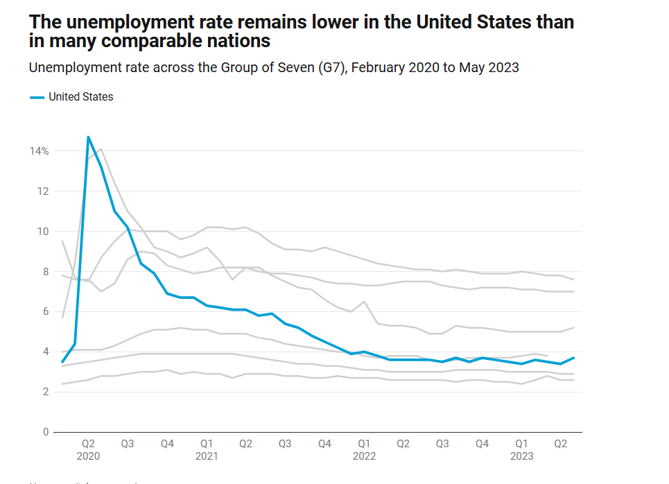

Policies / Acts
Inflation Reduction Act
The largest investment in climate action and clean energy
During Presidency but before the act
- recovery in manufacturing
- added 642,000 manufacturing jobs from 2021 - present
- brought companies to invest back into America
Plans and Act
Boost American semiconductor research development and production allowing leadership in technology
- we currently rely on east Asia for 75% of global production
- Micron, Qualcomm , GlobalFoundries announcement of partnerships and jobs back to the united states
- semiconductor production in the united states up by 50%
- allows us to manufacture chips domestically instead of seeking globally
Allows for more infrastructure to be built
Huge Document
- add ~2mil jobs per year over a decade
- large investment in public transit
- ensure reliable high speed internet for Americans
- large investment into clean water
Presidential Proclamation 10773
American Rescue Plan Act of 2021
General Economy
Record Lowest Unemployment

Fastest Growing G7 Nation
G7: Canada, France, Germany, Italy, Japan, the United Kingdom, and the United States
https://www.americanprogress.org/article/7-reasons-the-u-s-economy-is-among-the-strongest-in-the-g7/
- inflation is down from 8% to 2.4%
 THIS IS A GLOBAL INFLATION, the United States is the fastest recovering economy from that
THIS IS A GLOBAL INFLATION, the United States is the fastest recovering economy from that
Real Wages Have Gone Up
Source: White House
[!NOTE] Real Wages Have Risen
"Wage growth slowed to 4.5% the next year (September 2023), but inflation slowed even more, leading to a real wage gain of just under 1%. Last month, inflation was down to 2.4% with nominal wage growth at 4%, leading to a solid real gain of 1.5%."

[!NOTE] Potential Growth
CEA believes there is considerable room for real wages to keep growing, both for lower-wage workers and for workers overall, all while inflation continues to ease towards its 2% target

Health Accomplishments
- capped monthly insulin at $35 for seniors
Military Accomplishments
More Accomplishments
- withdrew from Afghanistan - conflict of nearly 20 years had huge guts to do it
- yes it was rough but it happened
- Signed Juneteenth National Independence Day Act

- Real GDP grew 5.9%, the fastest rate in 37 years link
- By the end of 2021, inflation reached a nearly 40-year high of 7.1%, which was partially OFFSET by the highest nominal wage and salary growth in at least 20 years
- In his third month in office, Biden signed an executive order to increase the minimum wage for federal contractors to $15 per hour, an increase of nearly 37%. The order went into effect for 390,000 workers in January 2022
- Job creation and consumer spending remained strong through the year, as the unemployment rate fell to match a 53-year low of 3.5% in December. Inflation peaked at 9.1% in June before easing to 3.2% by October 2023
- Biden signed numerous major pieces of economic legislation in the 117th Congress, including the American Rescue Plan, Infrastructure Investment and Jobs Act, CHIPS and Science Act, and the Inflation Reduction Act(https://en.wikipedia.org/wiki/Joe_Biden#cite_note-379) He signed the CHIPS and Science Act into law on August 9, 2022 It provides billions of dollars in new funding to boost domestic research on and manufacture of semiconductors, to compete economically with China
- $3.5 trillion social spending bill that expands the social safety net and includes major provisions on climate change.
- He also directed the U.S. military to facilitate the delivery of humanitarian aid to Palestinians in Gaza
- On May 31, 2024, Biden announced his support for an Israeli ceasefire proposal, saying that Hamas was "no longer capable" of another large-scale attack